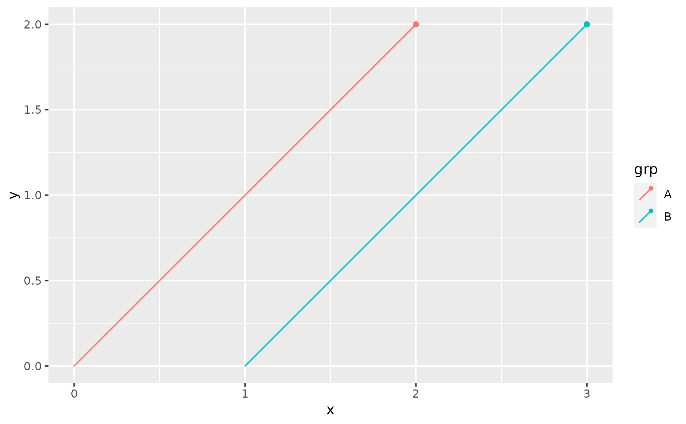
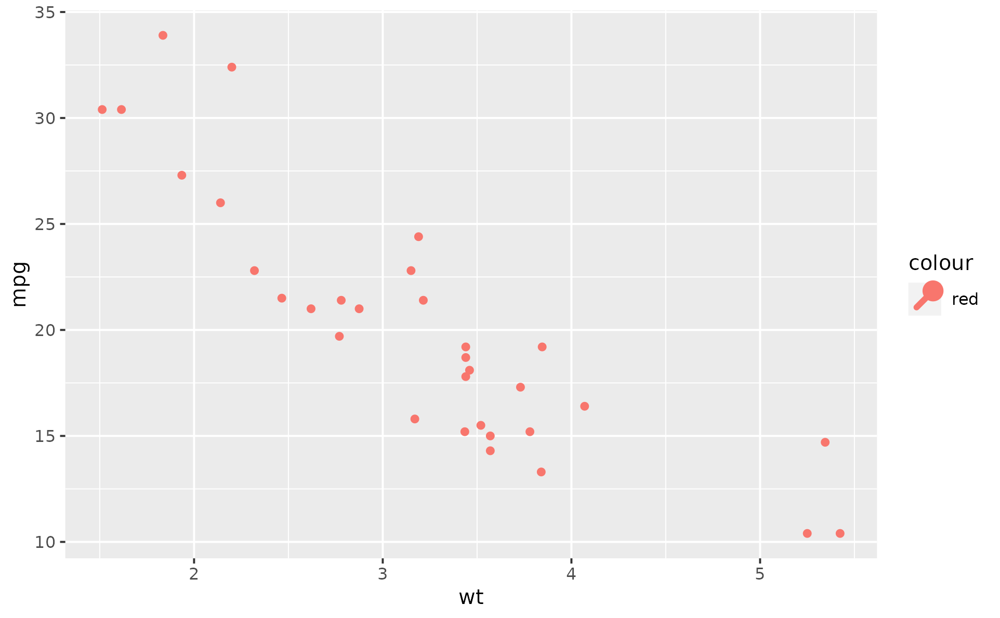

Each geom has an associated function that draws the key when
the geom needs to be displayed in a legend. These functions are
called draw_key_*(), where * stands for the name of the
respective key glyph. The key glyphs of the geom_lexis()
function draws a short line of 45° with a point at the end,
see examples below.
Usage
draw_key_pointless(data, params, size)
draw_key_sabline(data, params, linewidth, size)
draw_key_lexis(data, params, linewidth, size)Examples
df1 <- data.frame(x = c(0, 1), xend = c(2, 3), grp = c("A", "B"))
ggplot(df1, aes(x, xend = xend, color = grp)) +
geom_lexis()

# the glyph can be changed using the `key_glyph` argument
ggplot(mtcars, aes(wt, mpg, color = "red")) +
geom_point(key_glyph = "lexis")
